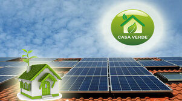
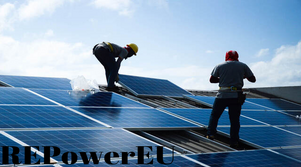

PROIECTE
SC Shimano SRL, infiintata in anul 2004, ofera servicii in domeniul energiei alternative.
In anul 2010, am ales sa montam prin programul "Casa Verde" derulat prin Administratia Fondului pentru Mediu.


Programul RePowerEU
DetaliiCasa Verde Fotovoltaice - sesiunea 2024/2025
Cei care s-au inscris in programul case verde au de parcurs pasii urmatori:
- Așteptarea publicarii listei de instalatori validați de către AFM. Conform ultimelor declarații în presă ale Președintelui AFM, lista instalatorilor validați AFM se va publica în jurul datei de 15 noiembrie 2024
- Alegerea instalatorului în aplicația oficiala a AFM.
Ulterior:
- Instalatorul va verifica dosarul dvs , declarandu-l eligibil sau neeligibil in aplicatia informatica.
- Pe baza verificarilor realizate de catre instalatori, AFM va publica listele de dosare aprobate si respinse .
- De la data publicarii dosarului dvs. in lista de dosare aprobate, se va demara perioada de 12 luni pentru implementarea proiectului dvs.
Alegerea instalatorului:
- Conform Ghidului de finanțare, în 90 de zile de la publicarea listei instalatorilor validați, trebuie să se realizeze atât selecția instalatorului de către beneficiar, cât și verificarea, solicitarea de clarificări și aprobarea / respingerea dosarului în aplicația informatică de către instalator.
- Recomandam sa alegeti cat mai repede instalatorul intrucat lucrarile vor fi executate dupa principiul primul venit-primul servit.
Oferta Casa Verde Fotovoltaice, sesiunea 2024-2025
Pentru aportul propriu de 3000 de lei instalatie fotovoltaica monofazata compusa din:
- Panouri fotovoltaice Trina Solar N type, dual glass -randament maxim cu invertoarele rezidentiale Huawei ( nu toate panourile fotovoltaice au aceasta calitate! ) -20 ani garantie; -Puterea instalata aprox. 5 kW;
- Invertor Huawei monofazat SUN 2000 5 KTL L1 -10 ani garantie; -Puterea 5 kW;
- Acumulator Huawei Luna2000 -10 ani garantie; -Capacitate 5 kWh;
Acest sistem va produce in medie pe luna aproximativ 500 kWh ( 750 kWh in lunile de vara si 250 kWh in lunile de iarna).
Montarea sistemelor fotovoltaice se va face in ordinea in care ne-ati ales ca instalator, dupa principiul: Primul venit- Primul servit! Daca vremea va tine cu noi, ca si anul trecut, montajele vor incepe imediat dupa ce apar primele liste cu beneficiarii eligibili postate de catre AFM ! Pentru cei care au bransament trifazat si doresc instalatie fotovoltaica trifazata, trebuie sa achite pe langa contributia proprie si diferenta de pret dintre instalatia monofazata si cea trifazata! Pentru cei care doresc instalatie fotovoltaica de putere mai mare ( panouri fotovoltaice mai multe, invertor de putere mai mare si/sau accumulator de putere mai mare ) trebuie sa achite pe langa contributia proprie si diferenta de pret!